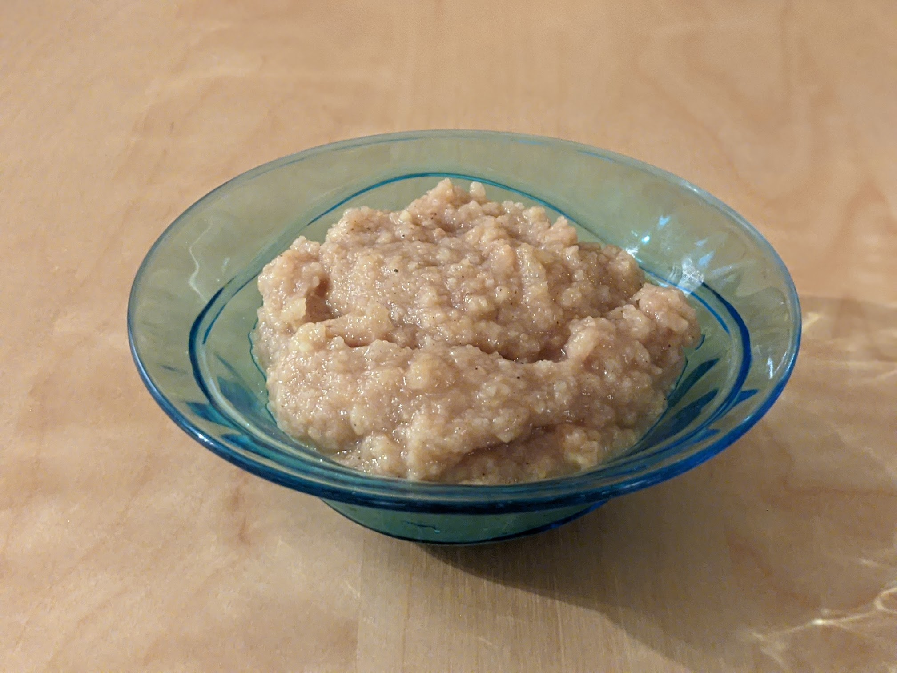

Compote d'automne

Pour 4 personnes :
- Quatre pommes (n'importe lesquelles, mais pas des Granny)
- Deux poires
- Deux coings
- Deux petites poignées de châtaignes
- Un citron
- Deux sachets de sucre vanillé
- Faire bouillir de l'eau, faire cuire les châtaignes dedans pendant cinq minutes, puis les plonger dans l'eau froide pour les faire refroidir.
- Peler les châtaignes (en faisant une entaille dedans au couteau, puis à la main), et les remettre à cuire dans de l'eau bouillante pendant 20 bonnes minutes.
- Éplucher les fruits et les couper en petits morceaux en les arrosant de jus de citron de temps en temps pour les empêcher de noircir.
- Mettre le tout (y compris les châtaignes) dans une casserole avec un grand verre d'eau et le sucre vanillé, bien mélanger, et cuire à feu moyen pendant une demi-heure environ (si ça cuit plus, c'est pas grave).
- Si on veut (mais c'est pas obligé), on peut enlever les châtaignes, mixer le reste de la compote, et remettre les châtaignes dedans avant de servir. Servir tiède.
Retour à la liste des recettes